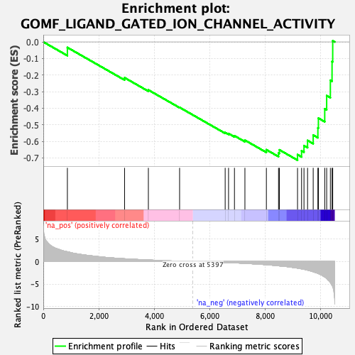
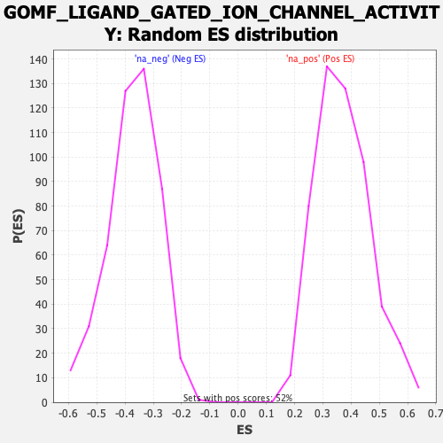

| Dataset | qlf.KOd4vsWTd4_gsea_score |
| Phenotype | NoPhenotypeAvailable |
| Upregulated in class | na_neg |
| GeneSet | GOMF_LIGAND_GATED_ION_CHANNEL_ACTIVITY |
| Enrichment Score (ES) | -0.7136337 |
| Normalized Enrichment Score (NES) | -1.9340785 |
| Nominal p-value | 0.0 |
| FDR q-value | 0.01997536 |
| FWER p-Value | 0.298 |

| SYMBOL | RANK IN GENE LIST | RANK METRIC SCORE | RUNNING ES | CORE ENRICHMENT | |
|---|---|---|---|---|---|
| 1 | ANXA6 | 868 | 2.174 | -0.0335 | No |
| 2 | KCNK6 | 2930 | 0.619 | -0.2160 | No |
| 3 | P2RX4 | 3788 | 0.346 | -0.2899 | No |
| 4 | MCOLN3 | 4914 | 0.087 | -0.3952 | No |
| 5 | CHRNA2 | 6557 | -0.212 | -0.5470 | No |
| 6 | ITPR2 | 6679 | -0.245 | -0.5530 | No |
| 7 | CCDC51 | 6892 | -0.299 | -0.5664 | No |
| 8 | CHRNB1 | 7269 | -0.405 | -0.5931 | No |
| 9 | GRIK5 | 8043 | -0.712 | -0.6506 | No |
| 10 | ITPR1 | 8481 | -0.956 | -0.6706 | No |
| 11 | TPCN2 | 8513 | -0.976 | -0.6515 | No |
| 12 | TRPM4 | 9166 | -1.476 | -0.6802 | Yes |
| 13 | RYR3 | 9312 | -1.632 | -0.6570 | Yes |
| 14 | KCNH2 | 9399 | -1.729 | -0.6260 | Yes |
| 15 | MCOLN1 | 9528 | -1.915 | -0.5947 | Yes |
| 16 | PTK2B | 9731 | -2.282 | -0.5622 | Yes |
| 17 | TPCN1 | 9900 | -2.616 | -0.5189 | Yes |
| 18 | CNGA1 | 9919 | -2.672 | -0.4600 | Yes |
| 19 | RYR1 | 10147 | -3.452 | -0.4034 | Yes |
| 20 | ITPR3 | 10217 | -3.775 | -0.3243 | Yes |
| 21 | GABRR2 | 10350 | -4.647 | -0.2315 | Yes |
| 22 | P2RX7 | 10411 | -5.252 | -0.1181 | Yes |
| 23 | RASA3 | 10435 | -5.612 | 0.0070 | Yes |
